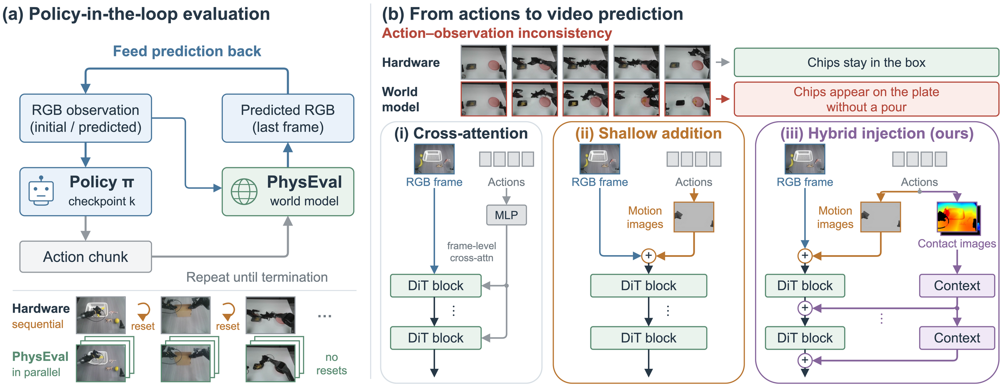
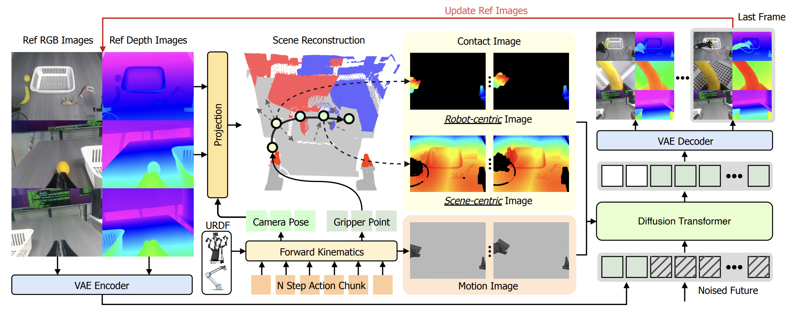
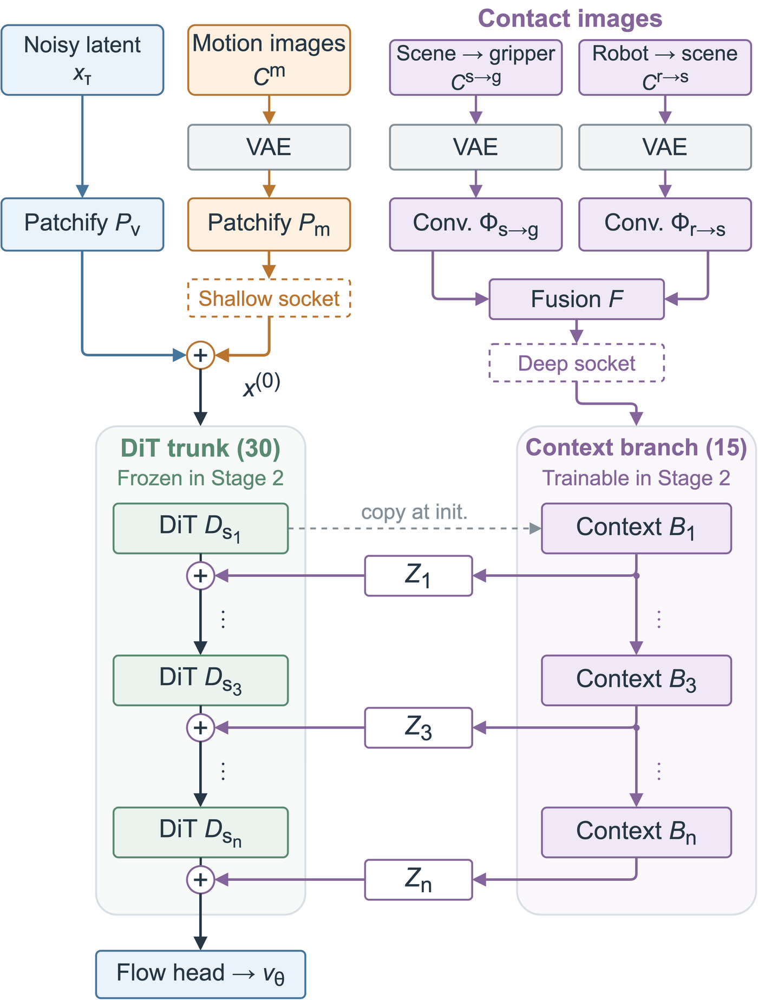
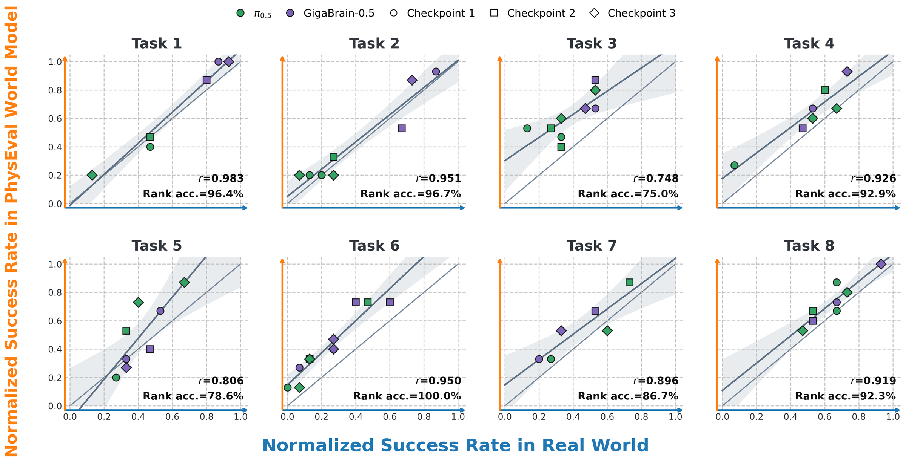

Developing a manipulation policy requires testing each checkpoint in diverse real-world scenes, where robot time and manual resets make evaluation its bottleneck. We propose to move this evaluation into a world model. Existing world models pursue visual fidelity, whereas evaluation needs physical fidelity, since the generated visual future must match the policy's actions exactly. We present PhysEval, a world-model evaluator with a physical-aware action condition named iMaC, which transfers future actions into images of Motion and Contact. Motion images fix where the robot body appears, while contact images add its clearance from predicted depth. As naive injection can leave the contact heatmap in the judged frame, we propose representation-aware hybrid injection, which feeds motion images to the shallow latent and contact images to a deep context branch. Training-time rollout sustains the closed loop. On eight real-robot tasks, PhysEval's checkpoint scores correlate with hardware at 0.748–0.983. In an independent closed-loop study, its per-task outcome agreement with hardware averages 67.5%, against at most 57.9% for two baselines.

(a) The policy proposes an action chunk, PhysEval predicts the resulting RGB observations, and the last predicted frame becomes the next policy input. Unlike hardware episodes, which run one at a time with manual resets, rollouts start from identical initial states and run in parallel. (b) On Task 4 the hardware execution fails, but a world model without physical-aware action conditioning, given the same policy's actions, predicts chips on the plate without a pour and mistakes the failure for a success. The bottom row compares three ways of injecting the action: (i) cross-attention from video tokens to action embeddings, (ii) adding motion-image embeddings to the shallow latent, and (iii) PhysEval's hybrid injection of motion images into the shallow latent and contact images into a deep context branch.

A compact action token asks the video model to infer where every robot link will appear. PhysEval instead computes these locations from the URDF and forward kinematics, and renders the action chunk as motion images before generation. Contact is decided at a smaller scale than the arm, so PhysEval also reconstructs the scene from the reference RGB and predicted depth and projects two contact images: a robot-to-scene field that says what the robot is about to reach, and a scene-to-gripper field that says which part of the scene is about to be acted on. After each chunk, the last predicted frame and its depth replace the reference, so the controls stay consistent over long closed-loop rollouts.

Motion images carry the appearance of the target frame, so they are added to the shallow video latent. Contact images encode proximity through artificial colors that must not appear in the judged frame, so they are interpreted by a 15-block context branch and reach the DiT through zero-initialized residual projections. Stage 2 trains only the contact path while the DiT trunk stays frozen.
Each task shows a PhysEval rollout together with its action-derived controls across the head and two wrist views: the generated RGB video, the URDF/FK motion images, and the scene-to-gripper and robot-to-scene contact images.

Each task compares early, middle, and late checkpoints of π0.5 and GigaBrain-0.5 on matched initial configurations, with one point per 15-episode evaluation group. PhysEval scores correlate with hardware success at Pearson r = 0.748–0.983. The tie-aware pairwise ranking accuracy ranges from 75.0% to 100% and pools to 89.9%. In seven of the eight tasks, the checkpoint that PhysEval scores highest is also the best on hardware. These results support relative checkpoint screening; hardware trials remain the final validation.
| Evaluator | Action condition | Score (0–100) | Agree (%) |
|---|---|---|---|
| Ctrl-World | Action embeddings (cross-attention) | 54.35 [52.23, 56.49] | 57.9 [52.3, 63.4] |
| ABot-PhysWorld | Action maps (deep) | 55.94 [53.28, 58.56] | 56.4 [50.5, 62.0] |
| PhysEval | Motion (shallow) + contact (deep) | 57.11 [54.94, 59.27] | 67.5 [61.8, 73.0] |
Under an independently administered closed-loop protocol, the same policy is rolled out from the same initial states in each world model, and 702 generated episodes over the eight tasks are judged against the hardware execution. Score is the mean rating on a 0–100 scale; Agree is the percentage of episodes whose predicted success or failure matches hardware. Values are macro-averaged over tasks with 95% bootstrap intervals. The three evaluators share the training data and a Wan-based 5B backbone, so they differ mainly in how the action enters the model. PhysEval never falls below 46.7% agreement on any task, whereas Ctrl-World agrees on 20.7% of Task 4 and ABot-PhysWorld on 20.0% of Task 2.